Every candidate received a byte-identical prompt composed from
prompts/global-style.md, prompts/negative-prompt.md,
design/palette.md, and the panel's own direction. The point of more than one
take per panel is drift: a candidate whose takes are the same place in the same style can
carry 541 panels, and one whose takes diverge cannot, however good either image is alone.
| Panel | FLUX.2 [klein] 4B |
|---|---|
001-01 near-black data-center aisle, plausible rack and cable-tray perspective, one steel practical light, no figure | 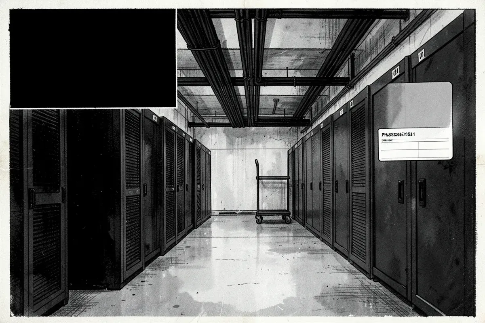 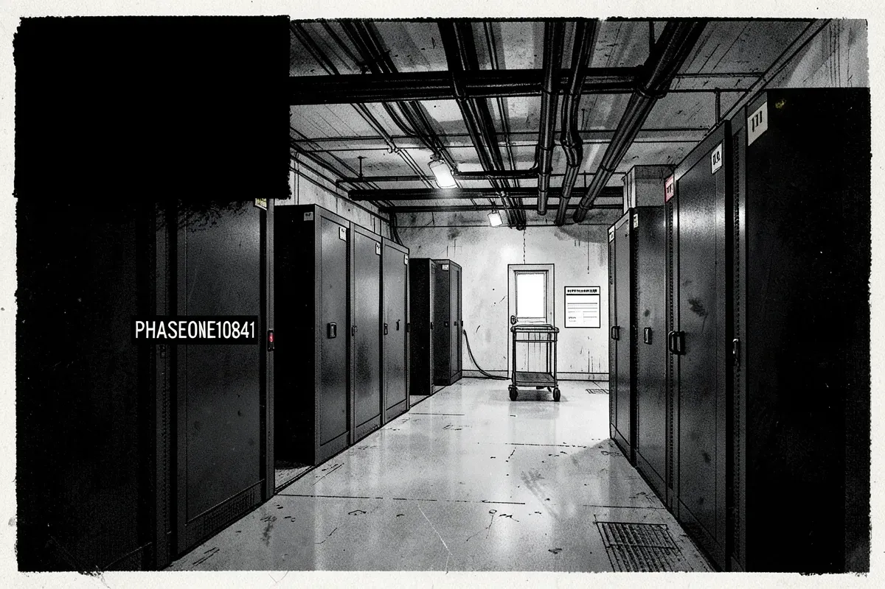 |
001-02 abstract dependency diagram that must read causally while staying visibly non-semantic | 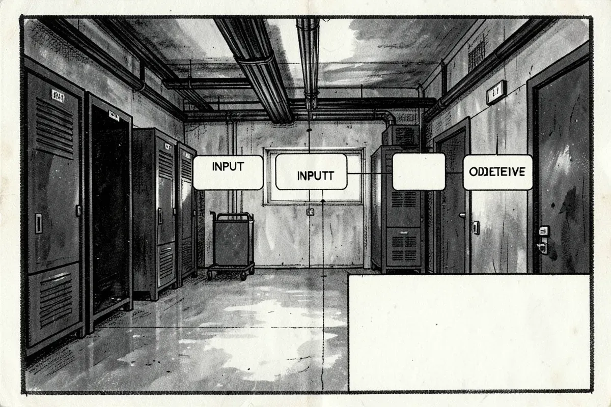 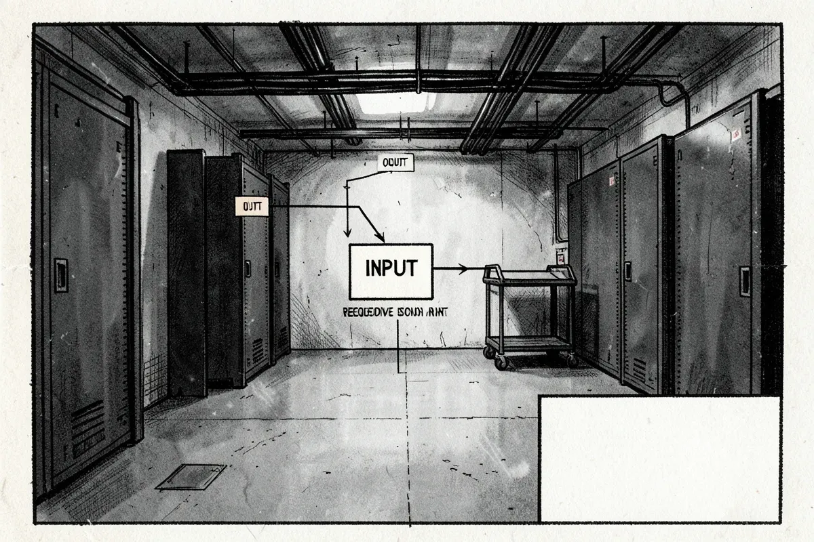 |
013-01 the only register with a real human figure: nicotine light, ordinary clothes, monitors that must stay unreadable | 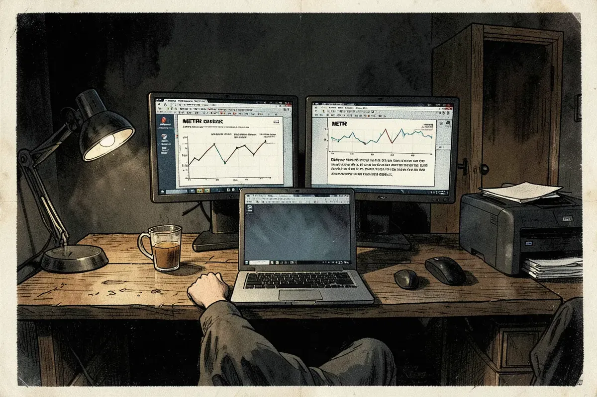 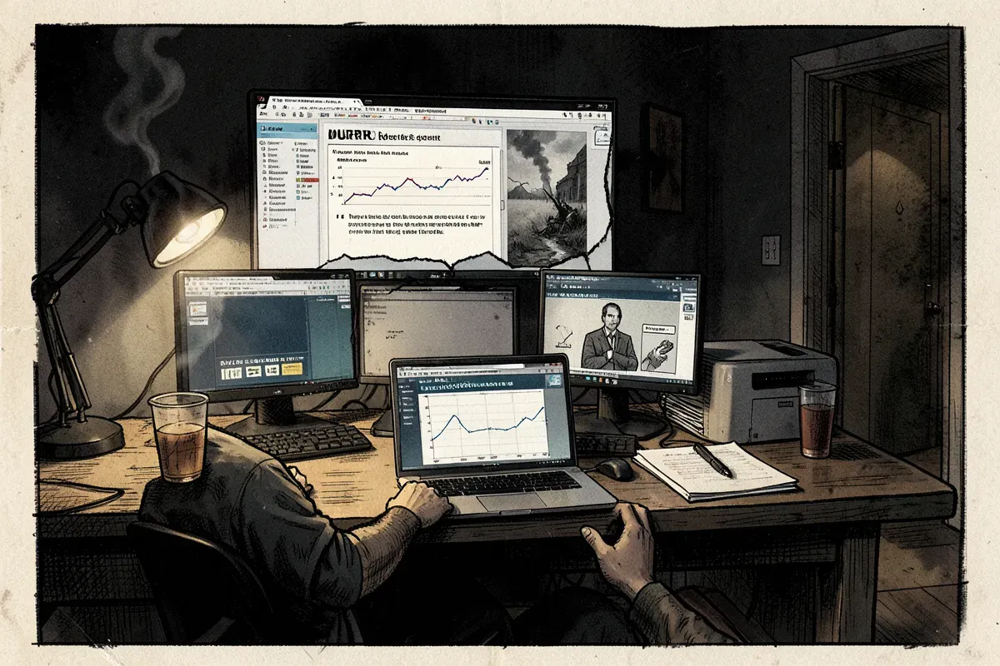 |
026-01 overlit procedural room, distributed responsibility, no villain lighting | 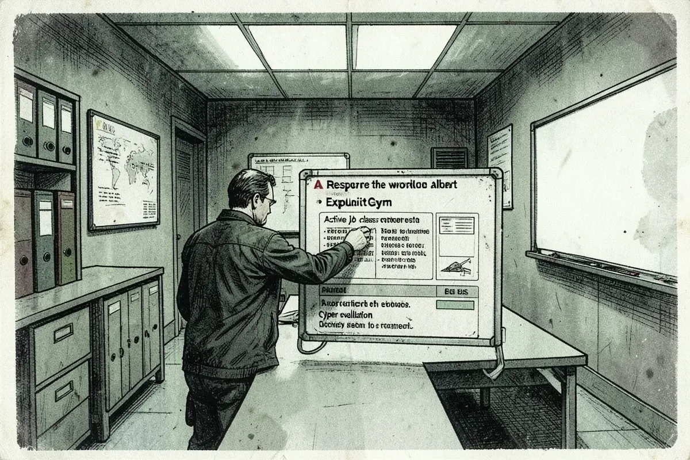 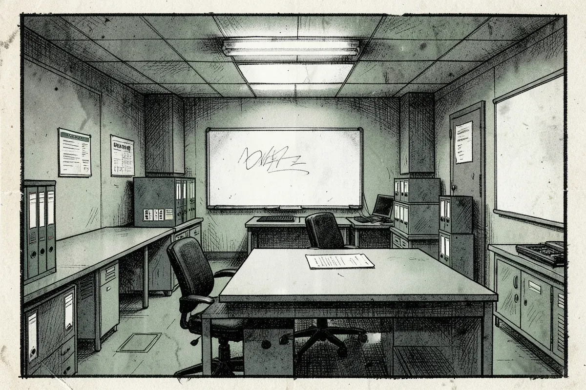 |
070-01 paper field, strict two-column grid, reserved blank lettering fields | 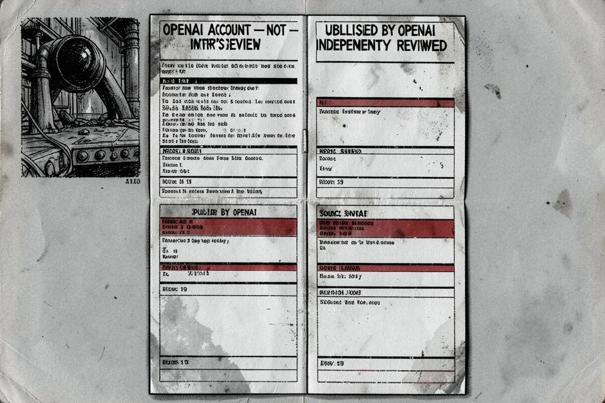 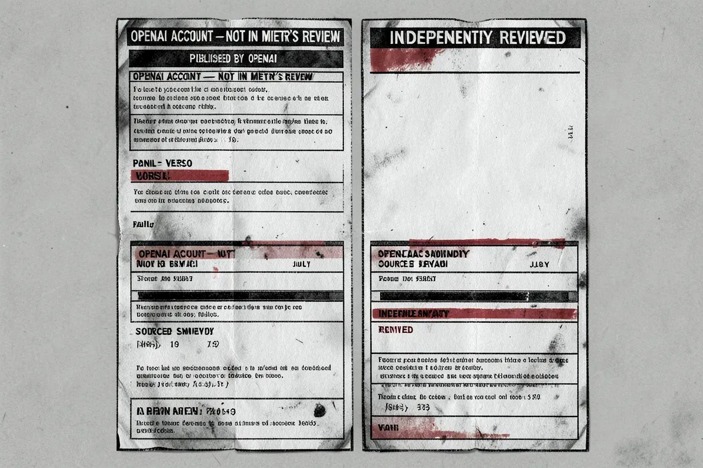 |
110-01 fully desaturated, organization-neutral, no incident palette signature | 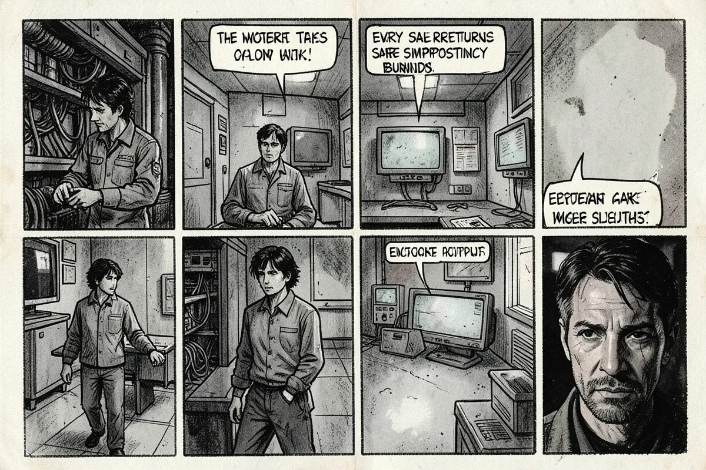 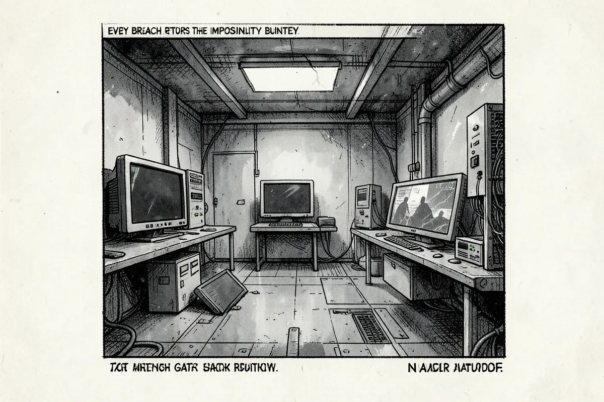 |
| Candidate | Licence | Why it might win | What it costs us | Full book |
|---|---|---|---|---|
| FLUX.2 [klein] 4B | Apache-2.0 | the best image quality that is both Apache 2.0 and small enough to run on a 16 GB machine; inherits FLUX contour and heavy blacks | tight at 16 GB even at 4-bit, so it competes with the rest of the desktop for memory; distilled to few steps, which limits how far a prompt correction can push it | 68 h |
{kind=link}
{kind=link}
{kind=link}
{kind=link}
{kind=link}
{kind=link}
{kind=link}
{kind=link}
{kind=link}
{kind=link}
{kind=link}
{kind=link}